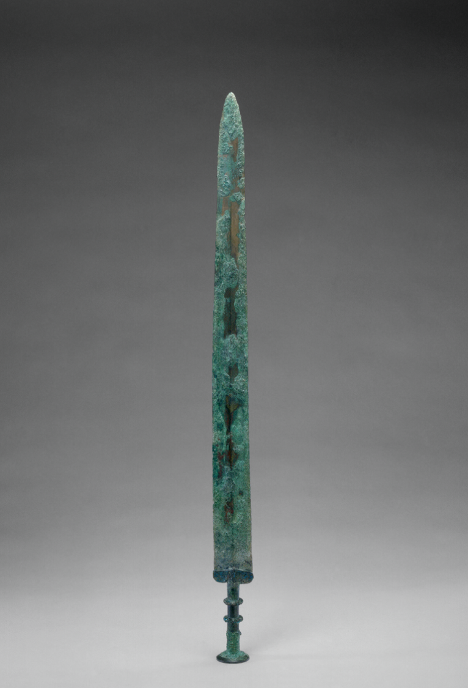

荆州的文物记忆，首先要从楚国说起。楚国是春秋战国时期的一个强大诸侯国，其疆域广阔，文化繁荣。荆州作为楚国的都城，见证了楚国的兴衰。楚国的文物，以其独特的艺术风格和精湛的工艺技术，展现了楚文化的博大精深。荆州博物馆内，收藏着大量的楚国文物，如青铜器、玉器、漆器等，每一件都是楚文化的象征。
其中，最为著名的当属楚国的青铜器。楚国的青铜器以其造型独特、纹饰精美而著称。例如，荆州出土的“越王勾践剑”，剑身修长，剑刃锋利，剑柄上镶嵌着精美的绿松石，展现了楚国青铜工艺的高超水平。此外，还有“楚大鼎”，鼎身巨大，纹饰繁复，是楚国青铜器中的精品。
楚国的玉器也是荆州文物记忆中的瑰宝。楚国的玉器以其细腻的雕刻和独特的造型而闻名。荆州博物馆收藏的“玉璧”、“玉琮”等玉器，不仅工艺精湛，而且寓意深远，反映了楚人对美的追求和对神灵的崇拜。
除了青铜器和玉器，楚国的漆器也是荆州文物记忆中不可或缺的一部分。楚国的漆器以其色彩鲜艳、图案精美而著称。荆州出土的漆器，如漆盒、漆盘等，不仅展示了楚国漆器工艺的精湛，也反映了楚人的生活习俗和审美情趣。
荆州的文物记忆，不仅属于楚国，也属于三国时期。三国时期，荆州因其战略位置的重要性，成为了魏、蜀、吴三国争夺的焦点。荆州的三国文物，见证了那个英雄辈出的年代。例如，荆州古城墙，作为全国重点文物保护单位，以其雄伟的身姿，诉说着历史的沧桑。城墙蜿蜒挺拔，护城河波光粼粼，共同构成了一幅动人的历史画卷。
荆州的三国文物中，最为人所熟知的莫过于“赤壁之战”的相关文物。赤壁之战是三国时期最著名的战役之一，也是中国历史上以少胜多的经典战例。荆州博物馆内，收藏着一些与赤壁之战相关的文物，如三国时期的兵器、战船模型等，每一件都讲述着那段波澜壮阔的历史。
荆州的文物记忆，还体现在其丰富的非物质文化遗产中。荆州花鼓戏，作为湖北省的主要地方剧种之一，以其独特的艺术形式和浓厚的地方特色，深受当地人民的喜爱。荆州花鼓戏的表演，不仅是一种艺术享受，也是对荆州传统文化的传承。
荆州的龙舟文化，也是其文物记忆的重要组成部分。每年的中国荆州国际龙舟节，不仅是一场体育竞技，更是一次文化的交流和传承。龙舟竞渡，展现了荆州人民的团结协作和勇往直前的精神。
荆州的文物记忆，是这座城市的灵魂。每一件文物，都是历史的见证，每一段记忆，都是文化的传承。荆州，不仅仅是一座城市，它是一个活着的历史博物馆，是一部流动的文化史诗。在这里，您可以感受到楚文化的优雅，三国故事的激荡，古城墙的雄伟，博物馆的深邃，花鼓戏的韵味，龙舟节的热烈，以及荆州精神的坚韧。荆州，是一座值得您细细品味的城市。